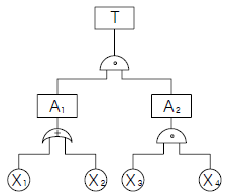
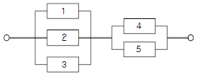
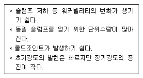

건설안전산업기사 (2006-03-05 기출문제)
1과목: 산업안전관리론
1. 어떤 작업에 대한 평균에너지 값이 4.7kcal/분 일 경우 1시간의 총 작업시간 내에 포함시켜야만 하는 휴식시간은 약 얼마인가? (단, 작업에 대한 평균 에너지가의 상한은 4kcal/분 이다.)
- 3.86분
- 7.23분
- 10.11분
- 13.13분
(정답률: 32%)

2. 다음 교육평가 방법 중 태도교육 평가 방법으로 가장 부적당한 것은?
- 관찰
- 면접
- 질문
- 테스트
(정답률: 49%)
3. 사고방지 대책 제5단계의 시정책의 적용에서 3E와 관계가 없는 것은?
- 교육(Education)
- 기술(Engineering)
- 재정(Economics)
- 독려(Enforcement)
(정답률: 66%)
4. 교육의 4단계 기법이 올바르게 진행된 것은 어느 것인가?
- 제시 - 도입 - 적용 - 확인
- 확인 - 도입 - 제시 - 적용
- 도입 - 확인 - 적용 - 제시
- 도입 - 제시 - 적용 - 확인
(정답률: 59%)
5. AE와 ABE형의 안전모의 내수성 시험은 모체를 20~25℃의 수중에 24시간 담가 놓은 후 대기 중에 꺼내어 수분을 제거한 무게 증가율이 얼마일 때 합격하는가?
- 1% 미만
- 2% 미만
- 2.5% 미만
- 3% 미만
(정답률: 48%)
6. 동기조사(motivation research)의 방법 중 가장 우수한 연구 방법은?
- 종업원의 요구 연구
- 관심의 표명 연구
- 작업태도 연구
- 사의를 표명한 이유 연구
(정답률: 68%)
7. 피로의 예방과 회복대책에 대한 설명이 아닌 것은?
- 작업부하를 크게 할 것
- 정적 동작을 피할 것
- 적업속도를 적절하게 할 것
- 근로시간과 휴식을 적정하게 할 것.
(정답률: 73%)
8. 안전조직에서 line system의 단점 중 옳은 것은?
- 비경제적 조직체제이다.
- 안전관리부와 생산부간의 유기적 협조가 곤란하다.
- 안전조직원은 전문가이어야 한다.
- 대규모 기업에서 채택이 곤란하다.
(정답률: 56%)
9. 상시 50인이 근로하는 공장에서 1일 8시간, 연근로 일수 300일에 1년간 3건의 부상자를 낸 공장의 강도율이 1.5였다면 총 휴업일수는 얼마인가?
- 180일
- 190일
- 208일
- 219일
(정답률: 25%)
10. 매슬로우(Maslow)의 욕구 5단계 중 안전의 욕구는 제 몇 단계인가?
- 제5단계
- 제3단계
- 제2단계
- 제1단계
(정답률: 68%)
11. 안전보건표지의 색채의 사용례에서 빨강으로 표시해야 하는 항목이 아닌 것은?
- 소화설비
- 위험경고
- 정지신호
- 유해행위의 금지
(정답률: 30%)
12. 작업자가 직면하는 구체적인 설비조건에 대하여 조작상의 위험성 및 잠재 위험성 등에 관하여 알게 하는 교육은다음 중 어느 것에 해당하는가?
- 의식교육
- 태도교육
- 환경교육
- 지식교육
(정답률: 59%)
13. 다음 중 전이(transfer)의 조건이 아닌 것은?
- 학습의 정도
- 학습의 방법
- 학습의 평가
- 학습자의 태도
(정답률: 49%)
14. 어떤 사업장의 종합재해지수가 16.95 이고 도수율이 20.83 이라면 강도율은 얼마인가?
- 20.45
- 15.92
- 13.79
- 10.54
(정답률: 43%)
15. 무재해 운동의 3원칙에 해당하지 않는 것은?
- 무의 원칙
- 직관의 원칙
- 참가의 원칙
- 선취의 원칙
(정답률: 75%)
16. 하인리히 재해발생 5단계 중 3단계는?
- 불안전행위 또는 불안전상태
- 사회적 환경 및 유전적 요소
- 인적 결함
- 사고
(정답률: 72%)
17. 생산현장에서 작업에 종사하고 있는 작업자가 작업을 함에 있어서 가장 안전하고 능력적으로 작업을 할 수 있도록 작업내용 및 작업단위별로 사용설비, 작업자, 작업조건 및 작업방법 등에 관해 규정해 놓은 것은 무엇이라 하는가?
- 안전수칙
- 기술표준
- 작업지도서
- 표준안전 작업방법
(정답률: 69%)
18. 재해 사고발생비율에 대하여 버드(Frank E. Bird)는 1 : 10 : 30 : 600 비율 이론을 주장하였다. 여기서 “30”에 해당하는 것은 다음 중 어느 것인가?
- 중상
- 경상
- 무상해, 무사고(위험순간)
- 무상해 사고(물리적 손실)
(정답률: 54%)
19. 태도에 관한 교육훈련의 효과 측정방법으로 가장 많이 쓰이는 방법은?
- 면접
- 노트의 관찰
- 평가시험
- 테스트
(정답률: 74%)
20. 다음 중 리더십 유형과 의사결정의 관계를 바르게 연결 한 것은?
- 개방적 리더 - 리더 중심
- 개성적 리더 - 종업원 중심
- 민주적 리더 - 전체집단 중심
- 독재적 리더 - 전체집단 중심
(정답률: 79%)
2과목: 인간공학 및 시스템안전공학
21. System 요소간의 link 중 인간 커뮤니케이션 Link에 해당되지 않는 것은?
- 방향성 Link
- 통신계 Link
- 시각 Link
- 콘트롤 Link
(정답률: 55%)
22. 그림의 결함수에서 컷셋을 구한 것이다. 올바른 것은?

- (X1, X2, X3), (X2, X3, X4)
- (X1, X3, X4), (X2, X3, X4)
- (X1, X2, X3), (X1, X3, X4)
- (X2, X3, X4), (X1, X2)
(정답률: 67%)
23. 다음 소음방지대책 중 가장 효과적인 방법은?
- 음원대책
- 능동제어
- 수음자대책
- 전파경로대책
(정답률: 69%)
24. 기계의 통제장치 형태 중 개폐에 의한 통제장치는?
- 노브(Knob)
- 토글 스위치(Toggle switch)
- 레버(Lever)
- 크랭크(Crank)
(정답률: 55%)
25. 위험성 평가(Risk Analysis)에서 위험의 정성적 확률 순위인 “거의 발생하지 않는(remote)”는 하루당 발생빈도(P) 를 얼마로 보고 있는가?
- P > 10-8/day
- P > 10-6/day
- P > 10-5/day
- P > 10-4/day
(정답률: 33%)
26. 조종-표시장치 이동비율(Control-Display ratio)을 최적으로 설계할 경우에 고려 할 사항과 거리가 먼 것은?
- 계기의 크기
- 운동성
- 공차
- 목측거리 및 조작시간
(정답률: 34%)
27. 기계의 신뢰도가 고장율이 일정한 지수분포를 나타내며, 고장율이 0.04일 때 이 기계가 10시간동안 만족스럽게 작동할 확률은?
- 0.40
- 0.67
- 0.84
- 0.96
(정답률: 30%)
28. 다음 중 체계의 기본기능에 해당하지 않는 것은?
- 감지
- 이동
- 정보보관
- 정보처리 및 의사결정
(정답률: 58%)
29. 인간-기계의 계면(interface)에서 조화성의 차원으로 고려될 수 없는 것은?
- 지적 조화성
- 신체적 조화성
- 통계적 조화성
- 감성적 조화성
(정답률: 43%)
30. 다음 그림과 같은 시스템의 신뢰도는 약 얼마인가? (단, 부품1, 2, 3의 신뢰도는 0.5이고, 부품4, 5의 신뢰도는 0.9임)

- 0.62
- 0.74
- 0.87
- 0.99
(정답률: 47%)
31. 안전 보건표지의 색채・색도기준 및 용도에서 노랑 색채의 용도는?
- 지시
- 안내
- 경고
- 금지
(정답률: 68%)
32. 다음 중 인간의 특성을 설명한 것 중 틀린 것은?
- 인간은 글씨보다 그림을 더 인식한다.
- 인간은 색깔보다 글씨를 더 빨리 인식한다.
- 인간의 단기기억시간은 매우 짧고 제한적이다.
- 인간은 5감 중 시각을 통하여 가장 많은 정보를 받아 들인다.
(정답률: 75%)
33. 다음 근로 능력 중 지식적 능력에 속하지 않는 것은?
- 이해력
- 판단력
- 표현력
- 감지력
(정답률: 52%)
34. 온도, 습도 및 공기의 유동이 인체에 미치는 열 효과를 하나의 수치로 통합한 감각지수를 무엇이라 하는가?
- 보온율
- 열압박지수
- oxford지수
- 실효온도
(정답률: 42%)
35. 다음 중 정보의 시각적제시(視覺的提示)가 적당한 경우는?
- 수용위치에 소음이 많은 경우
- 정보를 나중에 다시 볼 필요가 없을 때
- 정보의 지시대로 즉시 행동하야 할 때
- 작동자의 직무상 여러 곳으로 움직여야 할 때
(정답률: 48%)
36. 건구온도가 30℃, 습구온도가 27℃ 일 때 사람들이 느끼는 불쾌감은?
- 모든 사람이 불쾌감을 느낀다.
- 일부분의 사람이 불쾌감을 느끼기 시작한다.
- 대부분 불쾌감을 느끼지 못한다.
- 일부분의 사람이 쾌적함을 느끼기 시작한다.
(정답률: 55%)
37. 현재의 직무에 유사한 과업을 추가하여 단순 반복성을 없앰으로서 능률향상을 기하고자 하는 작업설계 방법은?
- 직무 윤택화
- 직무 충실
- 직무 순환
- 직무 확대
(정답률: 38%)
38. 작업장의 소음을 통제하는 일반적인 방법과 거리가 먼 것은?
- 소음의 격리
- 소음원 통제
- 자동화 설비로 교체
- 차폐장치 및 흡음재 사용
(정답률: 65%)
39. 기억 후 망각율이 가장 높은 기간은?
- 하루 이내
- 하루 이상 7일 이내
- 7일 이상 15일 이내
- 15일 이상 30일 이내
(정답률: 59%)
40. 기계가 정보의 입수와 통제하는 기능 중 계기나 신호 또는 감각에 의하여 행하는 통제기능은?
- 개폐에 의한 통제
- 반복에 의한 통제
- 반응에 의한 통제
- 양의 조절에 의한 통제
(정답률: 61%)
3과목: 건설시공학
41. 주로 바닥판 슬래브, 보 및 계단거푸집을 설계할 때 고려하여야 할 연직방향 하중으로 거리가 가장 먼 것은?
- 콘크리트 자중
- 거푸집의 자중
- 충격하중
- 작업하중
(정답률: 44%)
42. 다음 중 철골공사와 직접적으로 관련된 용어가 아닌 것은?
- 토크렌치
- 너트 회전법
- 베인 테스트
- 스터드
(정답률: 70%)
43. 현장에서 공무적 현장관리가 아닌 것은?(오류 신고가 접수된 문제입니다. 반드시 정답과 해설을 확인하시기 바랍니다.)
- 자재관리
- 노무관리
- 위험 및 재해방지
- 공정표 작성
(정답률: 35%)
44. 콘크리트 이어붓기 위치에 대한 설명 중 틀린 것은?
- 바닥판은 그 간사이의 중앙부에 작은보가 있는 때에는 작은보 너비의 2배 정도 떨어진 곳에서 이어붓는다.
- 기둥은 기초판⋅연결보 또는 바닥판 위에서 수평으로 이어붓는다.
- 캔틸레버로 내민보나 바닥판은 간사이의 중앙부에 수직으로 이어붓는다.
- 아치는 아치축에 직각으로 이어붓는다.
(정답률: 46%)
45. 흙막이 벽에 미치는 간극수압의 영향을 계측할 수 있는 장비로 적당한 것은?
- Water level meter
- Inclino meter
- Extension meter
- Piezo meter
(정답률: 56%)
46. 연약한 지반을 굴착할 때 기초저면 부분이 부풀어 오르고 흙막이 지보공을 파괴시켜 붕괴하는 현상은?
- 파이핑(Piping)
- 보일링(Boiling)
- 히빙(Heaving)
- 캠버(Camber)
(정답률: 59%)
47. 콘크리트 강도에 가장 큰 영향을 주는 것은?
- 시멘트와 모래의 배합비
- 모래와 자갈의 배합비
- 시멘트와 자갈의 배합비
- 물과 시멘트의 배합비
(정답률: 75%)
48. 다음 철골조에 관한 설명에 가장 거리가 먼 것은?
- 정밀한 가공을 요한다.
- 내화적이다.
- 철근콘크리트조에 비해 경량이다.
- 고층 및 대규모 건물에 적합하다.
(정답률: 49%)
49. 다음과 같은 문제점을 갖는 콘크리트는?

- 한중콘크리트
- 서중콘크리트
- 매스콘크리트
- 팽창콘크리트
(정답률: 47%)
50. 콘크리트 보양방법 중 초기강도가 크게 발휘되어 거푸집을 가장 빨리 제거할 수 있는 방법은?
- 살수보양
- 수중보양
- 피막보양
- 증기보양
(정답률: 72%)
51. 수평버팀대식 흙막이 공법을 적용하는 것이 적당한 것은?
- 폭이 넓고 길이가 긴 기초파기를 할 경우
- 파낸 지반이 단단하고 넓은 대지인 경우
- 좁은 면적에서 깊은 기초파기를 할 경우
- 기초파기 깊이가 얕고 근접건물도 없을 경우
(정답률: 42%)
52. 흙막이공법 선정시 검토해야 할 사항으로 가장 거리가 먼 것은?
- 토질 및 주변 지하매설물 상태
- 토공인원수와 숙련도 파악
- 인근주변의 소음 및 진동
- 공사기간과 경제성 검토
(정답률: 65%)
53. 말뚝박기 기계 중 디젤해머(diesel hammer)의 일반적인 설명으로 옳지 않은 것은?
- 박는 속도가 빠르다.
- 타격음이 작다.
- 타격에너지가 크다.
- 운전이 용이하다.
(정답률: 84%)
54. 깊은 기초공법으로 지하구조체의 바깥벽 밑에 끝날을 붙이고 지상에서 구축하여 중앙하부 흙을 파내어 구조체 자중으로 침하시켜 나가는 방법은?
- 페디스탈파일 공법
- 우물통식 공법
- 용기잠함 공법
- 개방잠함 공법
(정답률: 45%)
55. 다음 중 시방서 작성에 관한 내용으로 옳은 것은?
- 시방서는 건축주가 작성한다.
- 시방서는 도급자가 작성한다.
- 시방서는 건축설계자가 작성한다.
- 시방서는 도급자와 건축주가 공동으로 작성한다.
(정답률: 57%)
56. 특정공사를 위하여 작성된 시방서를 말하는 것으로 실시 설계도면과 더불어 공사의 내용을 보여주는 시방서는?
- 규격시방서
- 표준시방서
- 공사시방서
- 안내시방서
(정답률: 66%)
57. 다음 건설기계와 용도가 맞지 않는 것은?
- 파워쇼벨 - 굴착 및 크레인 작업
- 불도저 - 굴착, 운반
- 드래그라인 - 기계가 서있는 곳 보다 낮은 곳의 굴착
- 컨베이어 - 굴착, 기계
(정답률: 63%)
58. 다음 중 건설공사의 클레임 유형에서 거리가 먼 것은?
- 현장조건 변경에 따른 클레임
- 공사지연에 의한 클레임
- 작업범위 관련 클레임
- 작업인원 축소에 관한 클레임
(정답률: 71%)
59. 다음 거푸집에 대한 설명 중 가장 적절치 않은 것은?
- 거푸집은 거푸집널, 동바리 및 부속철물류로 구성된다.
- 거푸집의 역할은 콘크리트를 성형하는 주목적 외에도 작업자가 안전하면서 생산성 높게 작업할 수 있게 구성되어야 한다.
- 철제 거푸집의 경우는 전용횟수(全用回數)가 100회 정도까지 되므로 짜기 쉽게 하기보다는 떼내기 쉽게 짜는 것이 유리하다.
- 거푸집은 보통 기둥→바닥→보의 순서로 조립이 행해지므로, 상기 순서에 따라 거푸집 설계를 하도록 하며, 거푸집 설계 전 콘크리트 구조체도를 작성하는 것이 좋다.
(정답률: 46%)
60. 다음은 현장용접시 발생하는 재해예방조치를 설명한 것이다. 이 중 화재예방조치와 직접적인 관련성이 가장 적은 것은?
- 용접기의 완전한 접지(earth)를 한다.
- 용접부분 부근의 가연물이나 인화물을 치운다.
- 착의, 장갑, 구두 등을 건조상태로 한다.
- 불꽃이 비산하는 장소에 주의한다.
(정답률: 69%)
4과목: 건설재료학
61. 내화점토를 원료로 하여 소성한 표준형 내화벽돌의 기본 치수는?(오류 신고가 접수된 문제입니다. 반드시 정답과 해설을 확인하시기 바랍니다.)
- 190×90×57mm
- 200×100×60mm
- 230×114×65mm
- 210×100×60mm
(정답률: 26%)
62. 다음의 시멘트 분말도에 관한 설명 중 옳지 않은 것은?
- 분말도가 클수록 수화작용이 빠르다.
- 분말도가 클수록 초기강도의 발생이 빠르다.
- 분말도가 너무 크면 풍화되기 쉽다.
- 분말도 측정에는 주로 비비(vebe)시험기가 사용된다.
(정답률: 47%)
63. 실내의 라디에이터 커버, 환기구멍 등에 사용되는 금속 가공 제품은?
- 펀칭 메탈(punching meter)
- 벤틸레이터(ventilator)
- 리브 라스(rib lath)
- 솔라 스크린(solar screen)
(정답률: 45%)
64. 콘크리트 골재에 관한 설명 중 부적당한 것은?
- 골재는 콘크리트 체적의 약 70~80를 차지한다.
- 잔골재와 굵은 골재의 구분은 절건비중 2.5를 기준으로 한다.
- 입도란 골재의 대소립이 혼합하여 있는 정도를 말한다.
- 실적률이란 일정 용기내에 골재입자가 차지하는 실용적의 백분율을 의미한다.
(정답률: 39%)
65. 공기 중의 탄산가스와 화학반응을 일으켜 경화하는 미장재료는?
- 순석고 플리스터
- 시멘트 모르타르
- 돌로마이트 플라스터
- 혼합석고 플라스터
(정답률: 39%)
66. 구조용 강재에 반복하중이 작용하여 항복점 이하의 강도에서도 파단되는 수가 있다. 이와 같은 현상을 무엇이라하는가?
- 피로
- 인성
- 연성
- 취성
(정답률: 37%)
67. 다음의 합성수지판류 중 색이나 투명도가 자유로우나 화재시 Cl2가스 발생이 큰 것은?
- 염화비닐판
- 폴리에스테르판
- 멜라민 치장판
- 페놀수지판
(정답률: 47%)
68. 목재의 기건상태에서의 함수율은 평균 얼마 정도인가?
- 15%
- 30%
- 45%
- 50%
(정답률: 45%)
69. 다음 중 굳지 않은 콘크리트의 성질을 표시하는 용어가 아닌 것은?
- 워커빌리티
- 플라스티시티
- 슬럼프
- 피니셔빌리티
(정답률: 38%)
70. 목재 및 기타 식물의 섬유질소편에 합성수지 접착제를 도포하여 가열압착 성형한 판상제품은?
- 파티클 보드
- 시멘트목질판
- 집성목재
- 합판
(정답률: 64%)
71. 다음 중 합성수지와 그 용도의 연결이 옳지 않은 것은?
- 아크릴 수지 - 광고판
- 멜라민 수지 - 천장판
- 폴리에스테르 수지 - 욕조
- 염화비닐 수지 - 내수합판 접착제
(정답률: 41%)
72. 다음의 석재에 관한 설명 중 옳지 않은 것은?
- 석재의 강도는 비중과 흡수율이 클수록 커진다.
- 석재의 강도는 압축강도가 가장 크고 인장, 휨 및 전단 강도는 압축강도에 비하여 매우 작다.
- 일반적으로 규산분을 많이 함유한 석재는 내산성이 크다.
- 트래버틴은 대리석의 일정으로 탄산석회를 포함한 물에서 침전, 생성된 것이다.
(정답률: 41%)
73. 화성암의 일정으로 내구성 및 강도가 크고 외관이 수려하며, 절리의 거리가 비교적 커서 대재를 얻을 수 있으나, 함유광물의 열팽창계수가 달라 내화성이 약한 석재는?
- 안산암
- 대리석
- 화강암
- 응회암
(정답률: 32%)
74. 목재에 관한 기술 중 옳지 않은 것은?
- 목재는 구조재로서 비강도(강도/비중)가 크고 가공성이 좋다는 장점이 있다.
- 목재의 함유수분은 그 존재상태에 따라 자유수와 결합수로 대별된다.
- 섬유포화점 이상의 함수상태에서는 함수율의 증감에도 불구하고 신축을 일으키지 않는다.
- 응력의 방향이 섬유에 평행할 경우 목재의 압축강도가 인장강도보다 크다.
(정답률: 47%)
75. 다음의 점토제품의 종류 중 가장 고온으로 소성되고 흡수율이 적으며 위생도기, 모자이크 타일 등으로 이용되는 것은?
- 토기
- 자기
- 도기
- 석기
(정답률: 57%)
76. 목면⋅마사⋅양모⋅폐지 등을 원료로 하여 만든 원지에 스트레이트 아스팔트를 먹인 방수지로 주로 아스팔트 방수 중간층재로 이용되는 것은?
- 콜타르
- 망상 아스팔트 루핑
- 아스팔트 펠트
- 합성 고분자 루핑
(정답률: 69%)
77. 다음 시멘트 중 주로 내외장면의 마감 또는 인조석에 사용되는 것은?
- 중용열포틀랜드시멘트
- 플라이애쉬시멘트
- 킬튼시멘트
- 백색포틀랜드시멘트
(정답률: 53%)
78. 알루미늄의 성질에 대한 설명 중 틀린 것은?
- 반사율이 작으므로 열 차단재로 쓰인다.
- 상온에서 판, 선으로 압연가공하면 경도와 인장강도가 증가하고 연신율이 감소한다.
- 산과 알칼리에 약하여 콘크리트에 접하는 면에는 방식 처리를 요한다.
- 융점이 낮기 때문에 용해주조도는 좋으나 내화성이 부족하다.
(정답률: 49%)
79. 경량기포콘크리트인 ALC제품의 특징에 대한 설명 중 틀린 것은?
- 열전도율이 작다.
- 내화성이 크다.
- 차음성이 크다.
- 흡수율이 적다.
(정답률: 46%)
80. 회반죽에 관한 설명 중 옳지 않은 것은?
- 회반죽은 소석회에 모래, 해초풀, 여물 등을 혼합한 재료이다.
- 회반죽은 다른 미장재료에 비해 건조시일이 짧다.
- 회반죽 바름은 일반적으로 연약하고 비내수성이다.
- 건조에 의한 수축률이 크므로 여물로 균열을 분산, 경감시킨다.
(정답률: 30%)
5과목: 건설안전기술
81. 보통 흙의 굴착공사에서 굴착깊이가 5m, 굴착기초면의 폭이 5m인 경우 양단면 굴착을 할 때 상부 단면의 폭은? (단, 굴착구배는 1:1로 한다.)
- 10m
- 15m
- 20m
- 25m
(정답률: 56%)
82. 다음 중 옹벽 안정조건의 검토 사항이 아닌 것은?
- 활동(sliding)에 대한 안전검토
- 전도(overturning)에 대한 안전검토
- 지반 지지력(settlement)에 대한 안전검토
- 보일링(boiling)에 대한 안전검토
(정답률: 39%)
83. 달비계의 달기와이어로프는 지름의 감소가 공칭지름의 몇 %를 초과할 경우에 사용할 수 없도록 규정되어 있는가?
- 5
- 7
- 9
- 10
(정답률: 52%)
84. 하루의 평균기온이 4℃ 이하로 될 것이 예상되는 기상 조건에서 낮에도 콘크리트가 동결의 우려가 있는 경우에 사용되는 콘크리트는?
- 고강도 콘크리트
- 경량 콘크리트
- 서중 콘크리트
- 한중 콘크리트
(정답률: 52%)
85. 차량계 건설기계에 해당 되지 않는 것은?
- 불도저
- 항타기
- 파워쇼벨
- 타위크레인
(정답률: 52%)
86. 거푸집에 가해지는 콘크리트의 측압에 관한 다음 설명 중 틀린 것은?
- 슬럼프가 클수록 크다.
- 단면이 클수록 크다.
- 타설속도가 빠를수록 크다.
- 콘크리트 단위중량이 작을수록 크다.
(정답률: 54%)
87. 해체작업을 수행하기 전에 해체계획에 포함되어야 하는 사항이 아닌 것은?
- 부재 손상・변형・부식 등에 관한 조사계획서
- 해체 작업용 기계・기구 등의 작업계획서
- 해체의 방법 및 해체순서 도면
- 해체작업용 화약류 등의 사용계획서
(정답률: 39%)
88. 거푸집동바리 설치시 안전기준으로 틀린 것은?
- 동바리로 강관을 사용하는 경우 높이 2m 이내마다 수평연결재를 2개 방향으로 만들고 수평연결재의 변위를 방지한다.
- 동바리로 파이프서포트를 이어서 사용할 때는 3본까지로 제한한다.
- 동바리의 이음은 맞댄이음 또는 장부이음으로 한다.
- 강재와 강재와의 접속부 및 교차부는 볼트, 클램프 등 전용철물을 사용하여 단단히 연결한다.
(정답률: 42%)
89. 다음 안전시설비 등으로 사용되는 내역 중에서 추락방지용 안전시설비에 해당 되지 않는 것은?
- 안전난간 및 폭목
- 안전대 걸이설비
- 위험부위 보호덮개
- 방호선반
(정답률: 41%)
90. 추락시 로프의 지지점에서 최하단까지의 거리(h)를 구하는 식으로 옳은 것은?
- h = 로프의 길이 + 신장
- h = 로프의 길이 + 신장/2
- h = 로프의 길이 + 로프의 늘어난 길이 + 신장
- h = 로프의 길이 + 로프의 늘어난 길이 + 신장/2
(정답률: 47%)
91. 다음 중 일반적인 토석붕괴의 형태가 아닌 것은?
- 절토면의 붕괴
- 미끄러져 내림(sliding)
- 성토 법면의 붕괴
- 깊은 심층의 붕괴
(정답률: 49%)
92. 계단과 계단참은 얼마 이상의 하중에 견딜 수 있는 강도를 가진 구조로 설치하여야 하는가?
- 200kg/m2
- 300kg/m2
- 400kg/m2
- 500kg/m2
(정답률: 39%)
93. 거푸집 해체 작업시의 안전수칙과 거리가 먼 것은?
- 거푸집동바리를 해체할 때는 작업책임자를 선임한다.
- 해체된 거푸집 재료를 올리거나 내릴 때는 달줄이나 달포대를 사용한다.
- 보 밑 또는 슬래브 거푸집을 해체 할 때는 동시에 해체하여야 한다.
- 거푸집의 해체가 곤란한 경우 구조체에 무리한 충격이나 지렛대 사용은 금하여야 한다.
(정답률: 54%)
94. 다음 중 유해・위험방지계획서 제출 대상인 것은?
- 지상높이가 20m인 건축물의 해체공사
- 깊이 5.5m인 굴착공사
- 최대 지간거리가 50m인 교량건설공사
- 저수용량 1천만톤인 용수전용 댐
(정답률: 64%)
95. 흙파기 공사용 기계에 관한 설명 중 틀린 것은?
- 불도저는 일반적으로 거리 60m 이하의 배토작업에 사용된다.
- 크램셀은 좁은 곳의 수직파기를 할 때 사용한다.
- 파워쇼벨은 기계가 위치한 면보다 낮은 곳을 파낼 때 유용하다.
- 백호우는 5~6m 정도를 파낼 때 편리하다.
(정답률: 53%)
96. 강관비계 및 강관틀비계의 구조에 관한 설명 중 틀린 것은?
- 강관비계에서 비계기둥의 장선방향 간격은 1.8m 이하 로 할 것
- 비계기둥의 최고부로부터 31m 되는 지점 밑부분의 비계기둥은 2본의 강관으로 묶어 세울 것
- 강관비계에서 비계기둥 간의 적재하중은 400kg을 초과하지 아니할 것
- 강관틀비계에서 주틀간에 교차가새를 설치하고 최상층 및 5층 이내마다 수평재를 설치할 것
(정답률: 23%)
97. 운반차에 물건을 실을 경우 무거운 물건의 중심 위치는 어디에 두는 것이 좋은가?
- 상부
- 하부
- 중간부
- 상관없다.
(정답률: 38%)
98. 다음 중 철골공사시 도괴의 위험이 있어 강풍에 대한 안전 여부를 확인해야 할 필요성이 가장 높은 경우는?
- 연면적당 철골량이 일반건물보다 많은 경우
- 기둥에 H형강을 사용하는 경우
- 이음부가 공장용접인 경우
- 호텔과 같이 단면구조가 현저한 차이가 있으면 높이가 20m 이상인 건물
(정답률: 44%)
99. 양중기의 정기적인 자체검사 실시항목이 아닌 것은?
- 과부하방지장치, 권과방지장치 그 밖의 방호장치의 이상 유무
- 브레이크 및 클러치의 이상 유무
- 주행로의 상측 및 트롤리가 횡행하는 레일의 상태
- 와이어로프 및 달기체인의 손상 유무
(정답률: 32%)
100. 철근콘크리트 공사에서 거푸집의 사용시 고려해야 할 사항으로 가장 관계가 적은 것은?
- 거푸집 존치기간
- 작업순서
- 시공시간
- 콘크리트의 워커빌리티
(정답률: 40%)
휴식시간을 x 분이라고 하면, 작업시간은 60 - x 분이 된다. 이때, 작업시간 동안의 작업량은 (4 x 60 - 4.7 x) kcal 이 되어야 한다. 따라서, 다음과 같은 방정식이 성립한다.
(4 x 60 - 4.7 x) / (60 - x) = 4
이 방정식을 풀면 x = 13.13 분이 된다. 따라서, 1시간의 총 작업시간 내에 포함시켜야만 하는 휴식시간은 약 13.13분이 된다.